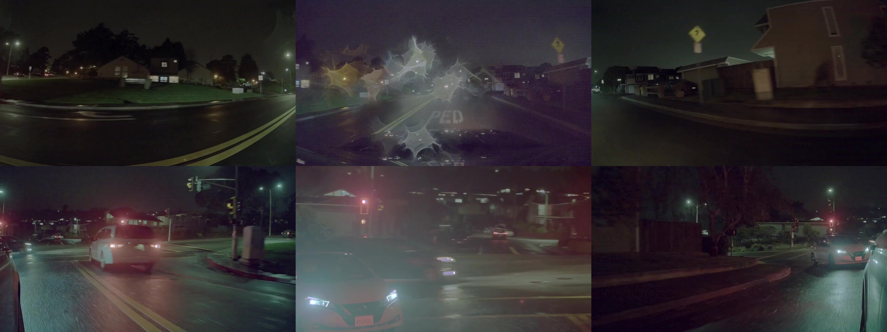
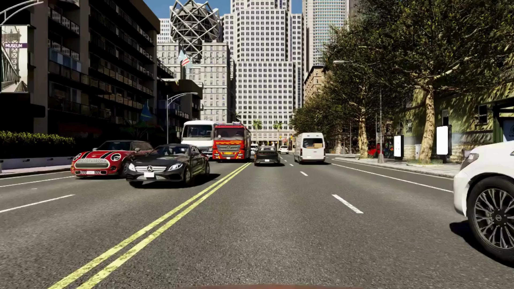
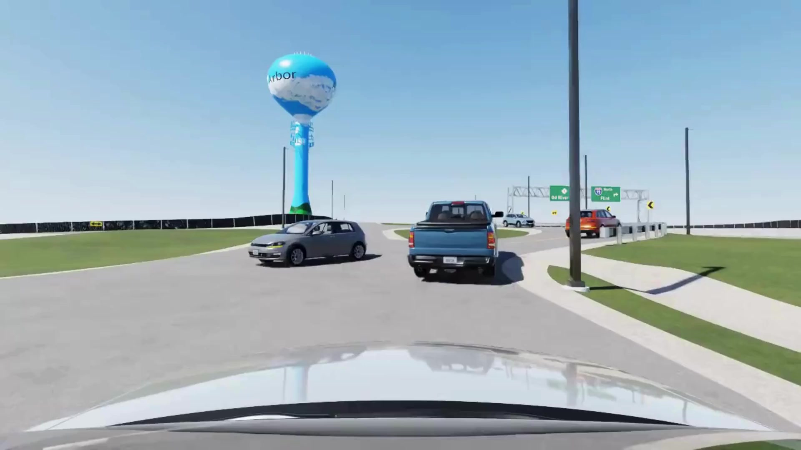

新しいNVIDIA Cosmos ワールドファウンデーションモデルで自律走行車開発をエンドツーエンドで簡略化

自律走行車（AV）を駆動するエンドツーエンドの計画モデルへのシフトにより、高品質で物理的に正確なセンサーデータへの需要が高まっている。これらのモデルはマルチモーダルデータセットを総合的に理解し、センサーデータセット・車両軌跡・運転行動の相互関係を把握することで、下流のトレーニングおよび検証タスクを支援する必要がある。
NVIDIA Cosmos ワールドファウンデーションモデル（WFM）—Predict、Transfer、Reason—をAVドメインに適応・ポストトレーニングすることで、開発者はエンドツーエンドのAVトレーニングを加速させるワールドモデルを構築できる。これらのモデルは、この記事で示すように合成データ生成（SDG）に使用するほか、クローズドループトレーニングや車載推論にも利用される。
ステップバイステップのワークフロー、テクニカルレシピ、Cosmos WFMの構築・適応・デプロイの具体例については、NVIDIA Cosmos Cookbook を参照してほしい。
この記事では、ポストトレーニングへのさまざまなアプローチを紹介する。Cosmosモデルをアプリケーションに適応させる方法は数多くある。ここで取り上げるモデルはすべて、現在開発者が利用可能なものだ。
Cosmos 上での合成データ生成パイプラインの開発
NVIDIA Researchは、Cosmos WFMを20,000時間の走行データでポストトレーニングし、AV開発ワークフロー向けのモデル群を構築した。CVPRで発表された論文において、研究者たちはCosmosモデルで生成したデータを使用することでAVモデルのトレーニング性能が向上したことを詳述した。
AV特化モデル
Cosmos WFMは、Cosmos-Transfer-1-7B-Sample-AV と Cosmos-Transfer-1-7B-Single2Multiview-Sample_AV によるサンプル構築を通じたデータ拡張によって、AVトレーニング向けのSDGを加速する。TransferモデルはHDマップ、LIDARデプス、テキストプロンプトを条件として多様な走行動画を生成し、さまざまな条件下でリアルなシーンを実現する。3Dキューボイド、レーン線、道路境界、交通要素などの構造化入力を使用することで、正確なジオメトリ制御が可能になる。マルチビューモデルはさらに、単一視点の動画をマルチビューで一貫した動画に拡張する。Cosmos Transferをマルチビューセンサー生成に対応させるポストトレーニングも可能であり、開発者は自身のバージョンをポストトレーニングするプロセスを適用できる。
3つ目のモデルとして、Cosmos Reasonのような推論モデルをポストトレーニングしたビジョンランゲージモデル（VLM）が、品質の低いアウトプットや非現実的なアウトプットを自動的に棄却するリジェクションサンプリングを行い、生成された合成データセットの高品質さとリアリズムを保証する。
合成データパイプライン
これらのモデルを組み合わせて使用することで、テキストプロンプトと実世界データから始まり、高忠実度で物理的に正確なマルチビュー動画を出力するパイプラインが構成される。
マルチビュー生成は、カメラの故障や遮蔽といった一般的な課題を解決する上で役立つ。マルチビュー動画を生成することで、開発者は不良カメラの映像を良好なカメラの映像に置き換えることができる。また、ダッシュカムデータの活用も可能になり、開発者はインターネット動画を自社のAV開発リグを模倣したデータに変換できる。

このパイプラインで生成された合成動画データは、ロングテール分布の問題を軽減し、極端な天候や夜間条件など困難なシナリオでの3Dレーン検出・3D物体検出・運転方針学習といった下流タスクにおける汎化性能を向上させることができる。
CVPR 2025に参加する方は、今週開催のEmbodied AI Workshopでこのプロジェクトについてさらに詳しく学ぶことができる。
開発者はこのデータを自身の開発に活用できる。Cosmosが生成したクリップのうち40,000本が現在、NVIDIA Physical AI Dataset で公開されている。
CosmosをAV既存ワークフローへ統合する
オープンソースシミュレーターやAV企業もCosmosモデルを自社データでポストトレーニングし、ツールチェーンへの統合を開始している。これにより、世界中のAV開発者に向けて加速された合成データ生成パイプラインが提供されるようになっている。
Cosmos Transfer
GTC Parisで発表されたCosmos Transfer NIMは、高速推論向けにコンテナ化されたCosmos Transferだ。開発者はNIMマイクロサービスを使用してCosmos Transferを迅速にポストトレーニング・デプロイし、SDGワークフローを加速できる。

オープンソースのAVシミュレーター CARLA は、Cosmos Transferをシミュレーション出力の拡張に統合し、150,000人の開発者コミュニティに物理的に正確な合成データ生成を提供する予定だ。この統合により、ユーザーはシンプルなプロンプトを使ってCARLAシーケンスから無数の高品質な動画バリエーションを生成できる。この統合は現在アーリーアクセス段階にあり、コミュニティのフィードバックをもとに引き続き開発が進められる。
Mcityは、AV開発・テストのための官民パートナーシップで、32エーカーの物理テストコースのオープンソースデジタルツインにCosmos Transferを統合している。Mcityを研究・開発に使用する開発者は、新しい天候・照明・地形を追加することでシナリオを素早くスケールできる。

さらに、Foretellix や Parallel Domain などの自律走行車ツールチェーンプロバイダーも、Cosmos Transferを既存のソリューションに統合している。ビジュアルAIデータプラットフォームの Voxel51 は、Cosmos Transferで生成されたデータを管理・可視化・精製するツールキットを提供している。その結果、エンドカスタマーは希望のツールチェーンを切り替えることなく、Cosmos Transferのスケールと多様性に容易にアクセスできる。
最後に、自律走行車ソフトウェア企業の Oxa は、Cosmos Transferを自社の開発ツールチェーン「Oxa Foundry」に統合している。Cosmos Transferは特定のユースケースに合わせてカスタマイズされた、迅速かつ簡単な合成のための画像・画像シーケンス変換をサポートする。この作業には、実際の道路上・オフロードデータの異なる天候（雪・霧・雨）および照明（夜間・黄昏・夜明け）変換が含まれる。
Cosmos Predict
GTC Parisでも発表された Cosmos Predict-2 は、将来のワールド状態予測において、Predict-1と比較して高い忠実度・少ないハルシネーション・動画中のテキスト・物体・モーション制御の向上を実現した、現時点で最高性能のワールドファウンデーションモデルだ。このモデルは間もなく複数のフレームレートと解像度をサポートし、画像プロンプトによって誘導される物理的インタラクションを中心に、次に起こり得ることを予測する最大30秒の動画を生成できるようになる。
Cosmos Predict-2はカスタマイズのために構築されており、キュレートされたデータと NVIDIA NeMo Curator や Cosmos Reason などのツールを使用して、特定の環境・タスク・カメラシステムに合わせて容易にポストトレーニングできる。また、Cosmos Predict-2はCosmos-Predict-7B-Single2Multiview-Sample_AVからのAVデータで事前トレーニングされており、AVドメインでのより迅速なポストトレーニングを促進する。
自律トラッキング企業の Plus は、大量の実世界走行データでCosmos Predict-1をポストトレーニングし、トラックカメラで実際に撮影した映像の忠実度に匹敵するマルチビュー動画を生成している。これらの合成マルチビュー動画は、自律トラックシステムを厳密にテスト・検証するためのエッジケース生成に活用できる。PlusはさらにCosmosからワールド知識を蒸留し、エンドツーエンドモデルの性能と新しいODDでの汎化能力を向上させている。
Oxaも、車両周囲の包括的なマルチカメラ視点の生成を支援するためにCosmos Predictを活用しており、これらすべての視点にわたって時間的に一貫した映像を生成している。
AVインダストリーがエンドツーエンドWFMを採用
AVインダストリーがエンドツーエンドのファウンデーションモデルを採用するにつれ、膨大で多様かつ物理的に正確なセンサーデータの必要性が重要になっている。実世界データだけでは、特に多様な運用ドメインやエッジケースシナリオにわたる安全で包括的なトレーニングの需要を満たすスケールには達せない。Cosmos WFM—Reason・Predict・Transfer—は、開発者が前例のない制御性とスケーラビリティで高忠実度のデータを生成・拡張・カスタマイズできるようにすることで、このギャップを埋める。
これらのモデルは組み合わさることで、AV開発のフライホイールを加速する。Cosmos Predictは行動の多様性を導入し、シナリオ拡張を加速する。Cosmos Transferは環境全体にわたる物理的リアリズムをもたらす。オープンアクセスと主要なシミュレーションプラットフォームおよびツールチェーンへのシームレスな統合により、開発者はエンドツーエンドの自律性の可能性を最大限に引き出し、より安全でスマートかつスケーラブルなAVデプロイへの道を切り開くことができる。
CVPR 2025で発表されるNVIDIAの研究論文を探索し、NVIDIAファウンダー兼CEOのジェンスン・ファンによるNVIDIA GTC Parisの基調講演を視聴してほしい。
最新情報を得るには、NVIDIAニュースを購読し、NVIDIA OmniverseのDiscordとYouTubeをフォローしてほしい。
- Omniverseデベロッパーページにアクセスして、開始に必要なすべての必需品を入手する
- 新しいセルフペースの「Learn OpenUSD」トレーニングカリキュラムを含む、OpenUSDリソースのコレクションにアクセスする
- 今後のOpenUSD Insidersライブストリームに参加し、NVIDIAデベロッパーコミュニティとつながる
デベロッパースターターキットを使用して、独自のアプリケーションやサービスを素早く開発・強化してほしい。
- Cosmos WFMの構築・適応・デプロイのステップバイステップのワークフロー、テクニカルレシピ、具体例については、Cosmos Cookbookを参照する
- Hugging FaceとGitHubの新しいオープンCosmosモデルとデータセットを探索するか、build.nvidia.comでモデルを試す
- コミュニティに参加してCosmos Discordチャンネルに加わる
すでにCosmosを使用している場合は、貢献する方法について詳しく学んでほしい。